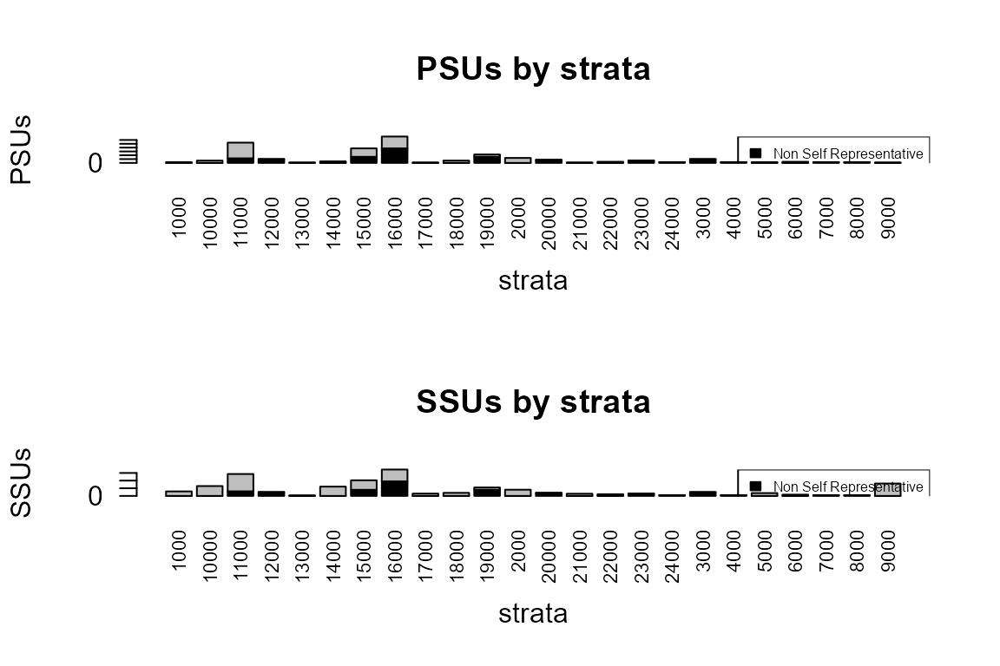

vignettes/R2BEAT_workflow.Rmd
R2BEAT_workflow.RmdThis vignette describes a generalized procedure making use of the methods implemented in the R package developed in the Italian National Institute, namely R2BEAT (“Multistage Sampling Allocation and PSU selection”).
This package allows to determine the optimal allocation of both Primary Stage Units (PSUs) and Secondary Stage Units (SSU), and also to perform a selection of the PSUs such that the final sample of SSU is of the self-weighting type, i.e. the total inclusion probabilities (as resulting from the product between the inclusion probabilities of the PSUs and those of the SSUs) are near equal for all SSUs, or at least those of minimum variability.
This general flow assumes that at least a previous round of the survey, whose sampling design has to be optimized, is available, and is characterized by the following steps:
Perform externally the definition of the sample design, and possibly of the calibration step, using the R package ReGenesees, and make the design object and the calibrated object available.
The workspace to be loaded (R2BEAT_ReGenesees.RData) is available at the link:
https://github.com/barcaroli/R2BEAT/tree/master/data
load("R2BEAT_ReGenesees.RData") # ReGenesees design objectThis is the ‘design’ object:
des## Stratified 2 - Stage Cluster Sampling Design (with replacement)
## - [49] strata (collapsed)
## - [789, 2236] clusters
##
## Call:
## e.svydesign(sample_2st, ids = ~municipality + id_hh, strata = ~stratum_sub,
## weights = ~d, self.rep.str = ~SR, check.data = TRUE)and this is the calibrated object:
cal## Calibrated, Stratified 2 - Stage Cluster Sampling Design (with replacement)
## - [49] strata (collapsed)
## - [789, 2236] clusters
##
## Call:
## e.calibrate(design = des, df.population = pop, calmodel = ~clage:sex -
## 1, partition = ~region, calfun = "logit", bounds = c(0.7,
## 1.7), aggregate.stage = 2, force = FALSE)It is advisable to check the presence of lonely strata:
# Control the presence of strata with less than two units
ls <- find.lon.strata(des)## # No lonely PSUs found!In case, provide to collapse and re-do the calibration.
In this example, in the ReGenesees objects there are the following variables:
str(des$variables)## 'data.frame': 2244 obs. of 17 variables:
## $ region : Factor w/ 3 levels "north","center",..: 1 1 1 1 1 1 1 1 1 1 ...
## $ municipality : num 8 8 8 8 8 8 8 8 8 8 ...
## $ stratum : Factor w/ 24 levels "1000","2000",..: 9 9 9 9 9 9 9 9 9 9 ...
## $ stratum_sub : Factor w/ 81 levels "100001","100002",..: 81 81 81 81 81 81 81 81 81 81 ...
## $ SR : Factor w/ 2 levels "0","1": 2 2 2 2 2 2 2 2 2 2 ...
## $ id_hh : Factor w/ 2236 levels "H100070","H100410",..: 69 43 64 49 367 27 372 373 374 368 ...
## $ sex : Factor w/ 2 levels "1","2": 1 1 2 2 1 2 1 2 1 1 ...
## $ clage : Factor w/ 5 levels "cl0_17","cl18_34",..: 3 1 2 1 5 2 2 2 3 1 ...
## $ income_hh : num 43741 23284 23450 22171 19904 ...
## $ work : num 1 1 1 2 0 1 1 1 1 2 ...
## $ unemployed : num 0 0 0 0 1 0 0 0 0 0 ...
## $ d : num 1238 1238 1238 1238 1238 ...
## $ progr_str : num 1 1 1 1 1 1 1 1 1 1 ...
## $ var.PSU : chr "8.H12425" "8.H10738" "8.H12157" "8.H11208" ...
## $ stratum_sub.collapsed: Factor w/ 49 levels "0.center.clps.1",..: 49 49 49 49 49 49 49 49 49 49 ...
## $ active : Factor w/ 2 levels "0","1": 2 2 2 1 1 2 2 2 2 1 ...
## $ inactive : Factor w/ 2 levels "0","1": 1 1 1 2 1 1 1 1 1 2 ...where there are three potential target variables:
summary(des$variables$income_hh)## Min. 1st Qu. Median Mean 3rd Qu. Max.
## 0 11463 18516 21661 26763 532331
table(des$variables$work)##
## 0 1 2
## 306 1487 451
table(des$variables$unemployed)##
## 0 1
## 1938 306Great attention must be paid to the nature of the target variables, especially of the ‘factor’ type. In fact, the procedure here illustrated is suitable only when categorical variables are binary with values 0 and 1, supposing we are willing to estimate proportions of ‘1’ in the population. If factor variables are of other nature, then an error message is printed.
Using ReGenesees objects as input, produce the following dataframes (function ‘input_to_beat.2st_1’):
Actually, the ‘deff’ dataframe is not used in the following steps, it just remains for documentation purposes.
Here is the way we can produce the above items:
load("pop.RData")
samp_frame <- pop
RGdes <- des
RGcal <- cal
strata_var <- c("stratum")
target_vars <- c("income_hh",
"active",
"inactive",
"unemployed")
weight_var <- "weight"
deff_var <- "stratum"
id_PSU <- c("municipality")
id_SSU <- c("id_hh")
domain_var <- c("region")
delta <- 1
minimum <- 25
inp <- prepareInputToAllocation2(
samp_frame, # sampling frame
RGdes, # ReGenesees design object
RGcal, # ReGenesees calibrated object
id_PSU, # identification variable of PSUs
id_SSU, # identification variable of SSUs
strata_var, # strata variables
target_vars, # target variables
deff_var, # deff variables
domain_var, # domain variables
delta, # Average number of SSUs for each selection unit
minimum # Minimum number of SSUs to be selected in each PSU
)and these are the results:
head(inp$strata)## stratum N STRATUM M1 M2 M3 M4 S1 S2 S3 S4 COST CENS DOM1 DOM2
## 1 1000 197451 1000 22266.58 0.6404431 0.2323140 0.12724293 14554.88 0.4798705 0.4223082 0.3332449 1 0 1 center
## 2 10000 106106 10000 27985.40 0.7679285 0.2114187 0.02065276 24367.97 0.4221544 0.4083146 0.1422189 1 0 1 north
## 3 11000 202700 11000 29173.85 0.8029080 0.1730880 0.02400395 39232.92 0.3978024 0.3783234 0.1530613 1 0 1 north
## 4 12000 57420 12000 26937.42 0.7764955 0.2075926 0.01591188 15743.78 0.4165936 0.4055834 0.1251347 1 0 1 north
## 5 13000 103089 13000 26357.25 0.7185271 0.2814729 0.00000000 14592.50 0.4497176 0.4497176 0.0000000 1 0 1 north
## 6 14000 84653 14000 20538.42 0.7518236 0.2131042 0.03507211 14285.81 0.4319547 0.4095007 0.1839621 1 0 1 north
head(inp$deff)## stratum STRATUM DEFF1 DEFF2 DEFF3 DEFF4 b_nar
## 1 1000 1000 0.960198 0.999984 1.015715 0.962537 56.50000
## 2 10000 10000 0.864671 1.703511 1.417543 0.827580 26.75000
## 3 11000 11000 1.820304 1.267734 1.352970 1.345746 23.77778
## 4 12000 12000 1.103866 0.510554 0.491751 0.711980 21.00000
## 5 13000 13000 1.000924 1.000924 1.000924 1.000000 95.00000
## 6 14000 14000 0.639871 0.865378 0.854025 0.684041 33.66667
head(inp$effst)## stratum STRATUM EFFST1 EFFST2 EFFST3 EFFST4
## 1 1000 1000 0.9689481 1 1 0.9420957
## 2 10000 10000 0.9500006 1 1 1.1915489
## 3 11000 11000 0.9544521 1 1 1.0546195
## 4 12000 12000 1.0429454 1 1 0.9732492
## 5 13000 13000 1.0019592 1 1 1.0000000
## 6 14000 14000 0.9829169 1 1 1.0974518
head(inp$rho)## STRATUM RHO_AR1 RHO_NAR1 RHO_AR2 RHO_NAR2 RHO_AR3 RHO_NAR3 RHO_AR4 RHO_NAR4
## 1 1000 1 -0.000717153153 1 -0.0000002882883 1 0.000283153153 1 -0.000675009
## 2 10000 1 -0.005255495146 1 0.0273208155340 1 0.016215262136 1 -0.006695922
## 3 11000 1 0.036013346341 1 0.0117541756098 1 0.015496243902 1 0.015179093
## 4 12000 1 0.005193300000 1 -0.0244723000000 1 -0.025412450000 1 -0.014401000
## 5 13000 1 0.000009829787 1 0.0000098297872 1 0.000009829787 1 0.000000000
## 6 14000 1 -0.011024357143 1 -0.0041210816327 1 -0.004468622449 1 -0.009672214
head(inp$psu_file)## PSU_ID STRATUM PSU_MOS
## 1 309 1000 50845
## 2 330 1000 146162
## 3 292 2000 24794
## 4 293 2000 19609
## 5 300 2000 13897
## 6 304 2000 36195
head(inp$des_file)## STRATUM STRAT_MOS DELTA MINIMUM
## 1 1000 197007 1 25
## 2 2000 261456 1 25
## 3 3000 115813 1 25
## 4 4000 17241 1 25
## 5 5000 101067 1 25
## 6 6000 47218 1 25It may happen that the population in strata (variable ‘N’ in ‘inp1$strata’ dataset) and the one derived by the PSU dataset (variable ‘STRAT_MOS’ in ‘inp2$des_file’ dataset) are not the same.
We can check it by applying the function ‘check_input’ in this way:
newstrata <- check_input(strata=inp$strata,
des=inp$des_file,
strata_var_strata="STRATUM",
strata_var_des="STRATUM")##
## --------------------------------------------------
## Differences between population in strata and PSUs
## --------------------------------------------------
## STRATUM N_in_strata N_in_PSUs relative_difference
## 1 1000 197451 197007 -0.002
## 12 2000 258193 261456 0.012
## 18 3000 116213 115813 -0.003
## 19 4000 17879 17241 -0.037
## 20 5000 102706 101067 -0.016
## 21 6000 47477 47218 -0.005
## 22 7000 30193 30370 0.006
## 23 8000 26580 26518 -0.002
## 24 9000 94610 92833 -0.019
## 2 10000 106106 106030 -0.001
## 3 11000 202700 205900 0.016
## 4 12000 57420 57657 0.004
## 5 13000 103089 102933 -0.002
## 6 14000 84653 83983 -0.008
## 7 15000 187343 186390 -0.005
## 8 16000 108621 108816 0.002
## 9 17000 59483 61117 0.027
## 10 18000 71642 74255 0.035
## 11 19000 145891 140383 -0.039
## 13 20000 62130 60853 -0.021
## 14 21000 51552 55144 0.065
## 15 22000 41688 41791 0.002
## 16 23000 72809 72165 -0.009
## 17 24000 12081 11567 -0.044
##
## --------------------------------------------------
## Population of PSUs has been attributed to strataTogether with the print of the differences between the two populations, the function produces a new version of the strata dataset, where the population has been changed to the one derived by the PSUs dataset.
It is preferable to use this new version:
inp$strata <- newstrataUsing the function ‘beat.2st’ in ‘R2BEAT’ package execute the optimization of PSU and SSU allocation in strata:
cv <- as.data.frame(list(DOM=c("DOM1","DOM2"),
CV1=c(0.02,0.03),
CV2=c(0.03,0.05),
CV3=c(0.03,0.05),
CV4=c(0.05,0.08)))
cv## DOM CV1 CV2 CV3 CV4
## 1 DOM1 0.02 0.03 0.03 0.05
## 2 DOM2 0.03 0.05 0.05 0.08
set.seed(1234)
minPSUstrat <- 2
inp$des_file$MINIMUM <- 25
alloc <- beat.2st(stratif = inp$strata,
errors = cv,
des_file = inp$des_file,
psu_file = inp$psu_file,
rho = inp$rho,
deft_start = NULL,
effst = inp$effst,
minnumstrat = 2,
minPSUstrat)## iterations PSU_SR PSU NSR PSU Total SSU
## 1 0 0 0 0 7721
## 2 1 111 72 183 109498
## 3 2 155 114 269 7925
## 4 3 116 132 248 8660
## 5 4 146 122 268 8343
## 6 5 128 130 258 8580
## 7 6 143 124 267 8391
## 8 7 131 128 259 8550
## 9 8 143 124 267 8392
## 10 9 131 128 259 8550
## 11 10 143 124 267 8392
## 12 11 131 128 259 8550
## 13 12 143 124 267 8392
## 14 13 131 128 259 8550
## 15 14 143 124 267 8392
## 16 15 131 128 259 8550
## 17 16 143 124 267 8392
## 18 17 131 128 259 8550
## 19 18 143 124 267 8392
## 20 19 131 128 259 8550
## 21 20 143 124 267 8392This is the sensitivity of the solution:
alloc$sensitivity## Type Dom V1 V2 V3 V4
## 2 DOM1 1 1 0 1 1
## 6 DOM2 1 1 0 8 1150
## 10 DOM2 2 1 1 245 1
## 14 DOM2 3 1 1 275 1i.e., for each domain value and for each variable it is reported the gain in terms of reduction in the sample size if the corresponding precision constraint is reduced of 10%.
These are the expected values of the coefficients of variation:
alloc$expected## Type Dom V1 V2 V3 V4
## 2 DOM1 1 0.0121 0.0104 0.0296 0.0307
## 6 DOM2 1 0.0171 0.0132 0.0496 0.0800
## 10 DOM2 2 0.0214 0.0209 0.0499 0.0675
## 14 DOM2 3 0.0283 0.0242 0.0499 0.0339Using the function ‘select_PSU’ execute the selection of PSU in strata:
set.seed(1234)
sample_1st <- select_PSU(alloc, type="ALLOC", pps=TRUE, plot=TRUE)
This is the overall sample design:
sample_1st$PSU_stats## STRATUM PSU PSU_SR PSU_NSR SSU SSU_SR SSU_NSR
## 1 1000 2 2 0 294 294 0
## 2 2000 13 13 0 405 405 0
## 3 3000 10 0 10 250 0 250
## 4 4000 2 0 2 50 0 50
## 5 5000 2 2 0 185 185 0
## 6 6000 3 3 0 82 82 0
## 7 7000 2 0 2 50 0 50
## 8 8000 2 0 2 50 0 50
## 9 9000 1 1 0 810 810 0
## 10 10000 6 6 0 644 644 0
## 11 11000 53 41 12 1432 1132 300
## 12 12000 10 0 10 250 0 250
## 13 13000 1 1 0 30 30 0
## 14 14000 4 4 0 607 607 0
## 15 15000 38 22 16 1021 621 400
## 16 16000 69 31 38 1725 775 950
## 17 17000 1 1 0 151 151 0
## 18 18000 6 6 0 199 199 0
## 19 19000 22 6 16 550 150 400
## 20 20000 8 0 8 200 0 200
## 21 21000 1 1 0 142 142 0
## 22 22000 3 3 0 109 109 0
## 23 23000 6 0 6 150 0 150
## 24 24000 2 0 2 50 0 50
## 25 Total 267 143 124 9436 6336 3100Finally, we are able to select the Secondary Sample Units (the individuals) from the already selected PSUs (the municipalities). We proceed to select the sample in this way:
samp <- select_SSU(df=pop,
PSU_code="municipality",
SSU_code="id_ind",
PSU_sampled=sample_1st$sample_PSU)##
## --------------------------------
## Total PSUs = 267
## Total SSUs = 9436
## --------------------------------To check that the total amount of selected units with respect to the initial allocation:
nrow(samp)## [1] 9436## [1] 8392The difference is due to the fact that the constraint on the minimum number of SSUs to be selected for PSU has been enforced, thus resulting in an increase of the SSUs with respect to the optimal allocation.
We check also that the sum of weights equalizes the population size:
nrow(pop)## [1] 2258507
sum(samp$weight)## [1] 2258507This is the distribution of weights:
par(mfrow=c(1, 2))
boxplot(samp$weight,col="orange")
title("Weights distribution (total sample)",cex.main=0.7)
boxplot(weight ~ region, data=samp,col="orange")
title("Weights distribution by region",cex.main=0.7)
boxplot(weight ~ province, data=samp,col="orange")
title("Weights distribution by province",cex.main=0.7)
boxplot(weight ~ stratum, data=samp,col="orange")
title("Weights distribution by stratum",cex.main=0.7)It can be seen that the sample is fully self-weighted inside strata, and approximately self-weighted in aggregations of strata, that is the result we wanted to obtain.